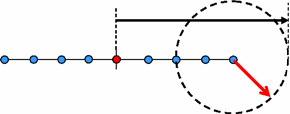

Setting |
Recommendation and Explanation |
|
|---|---|---|
Interaction distance Interaction distance is determined by the model’s hoodpix and site_length.  |
||
Recommend to not use INTERACTION_DISTANCE to avoid unnecessarily large interaction distance, which could cause layout promotion and hierarchy degradation. |
||
hoodpix (optical model parameter described in Calibre WORKbench User’s and Reference Manual) |
Hoodpix defines the kernel diameter of the optical model. Minimizing it decreases OPC run time. |
|
approxorder (optical model parameter) |
By decreasing the number of optical kernels you decrease OPC run time. |
|
kerngrid (optical model parameter) |
Increasing the size of the optical kernel grid decreases OPC run time. |
|
hoodpix (VT5 resist model parameter described in Calibre WORKbench User’s and Reference Manual) |
Set the VT5 hoodpix to less than or equal to the optical model hoodpix. |
|
density kernels |
Using density kernels in VT5 models increases the OPC run time. |
|
General modeling recommendation |
Follow the best practices for accuracy, but take run time also into consideration. See “Global Recommendations for Optical Models” and “Best Practices for VT5 Modeling” in the Calibre WORKbench User’s and Reference Manual. |
|
Fragmentation optimization Try to avoid excessive fragmentation for straight edges in the same context. Exact recommendations depend on the technology node and CD control requirements. |
||
0.5 * tilemicrons is a good starting point for most layers. If maxedgelength is larger than that, it is reset to equal it. Critical layers on 45nm or smaller nodes require more fragmentation to ensure quality. |
||
OPC iterations The number of OPC iterations has a significant impact on the OPC run time. Improving the recipe convergence could potentially reduce the number of iterations without compromising accuracy. See “Fix Recipe Non-Convergence” for suggestions. |
||
Site placement |
||
Unnecessarily long site placement can cause longer run time without improving OPC accuracy. Define a reasonable site length with the RESIST option of siteinfo. |
||
Avoid using the orthog option. Site orthogonalization increases run time by up to 30% in each iteration. |
||
Cell cloning If you are using a symmetrical optical source, set the LITHO_ASYM_SOURCE_CELL_CLONE to DISABLE. |
||